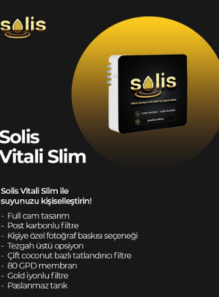
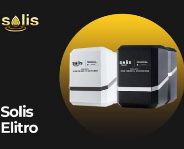

Solis Gold Premium
Akıllı Teknolojinin Suyla Buluştuğu Nokta
- Kaçak su sensörü
- Filtre kirlilik oranı göstergesi
- Şebeke basınç durumu göstergesi
- Tank doluluk oranı derecesi göstergesi
- Silver pompa
- Android işletim sistemi kontrolü
- Yapay Zeka destekli
- Sızıntı sensörü ve sesli alarm
- Suyun sertlik durumu ölçümü
- Işıklı sistem

Solis Vitali Slim
Solis Vitali Slim ile suyunuzu kişiselleştirin
- Full cam tasarım
- Post karbonlu filtre
- Kişiye özel fotoğraf baskısı seçeneği
- Tezgah üstü opsiyon
- Çift coconut bazlı tatlandırıcı filtre
- 80GPD Membran
- Gold iyonlu filtre
- Paslanmaz tank

Solis Elitro
Su arıtmanın en estetik ve güvenilir yolu Solis Elitro ile tanışın
- Block karbonlu filtre
- 5 Micron sediment filtre
- Gümüş iyonlu filtre
- Coconut bazlı tatlandırıcı filtre
- Paslanmaz musluk